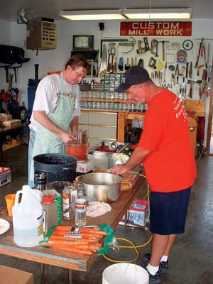
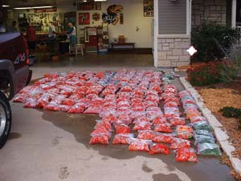
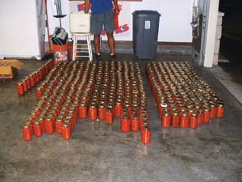

It all started in 1990, when we were moving my great aunt out of her home and she happened to have three jars of canned salsa in her cupboard. I talked her out of one jar and it turned out to be the best salsa I had ever tasted. I asked her for the recipe, and she listed the ingredients from memory.
This recipe has become an absolute favorite, and for 17 years some friends and I have had an annual “Salsa Fest” where we make hundreds of quarts of it. Not only do we have a great time planting and harvesting, but on salsa-making day we gather to reminisce about past fests and catch up on each other’s lives. Part of the satisfaction of processing hundreds of pounds of tomatoes and peppers is sharing the finished product with our family and friends. Each member of the team has his favorite mix of flavors and no batch is exactly the same, which is what keeps us coming back year after year.
The process starts in early May with the planting of the garden. The first garden consisted of about 20 regular tomato plants and two jalapeño pepper plants and has grown to this year’s garden of 65 ‘La Roma’ and 10 regular tomato plants. Included in the pepper plants are jalapeño, habañero, cayenne, tabasco, ‘Serrano del sol,’ ‘Thai Dragon,’ ‘Kung Pao,’ ‘Mucho Nacho,’ ‘Salsa Hot’ and ‘Scotch Bonnet’ hot peppers, plus bell peppers. This year’s 75 tomato plants produced a whopping 237 gallon-bags of tomatoes, which along with the other ingredients made a record 508 quarts of salsa!
The core salsa-making crew consists of my brother Kent, who always seems to have some sort of meeting or class every time we have to pick tomatoes; my friend Dave, who owns a Cuisinart food processor; and Bob, who is as reliable as they come. With all the help from the others I have very little to do but till, fertilize, water and weed the garden; store and clean 300 to 400 canning jars; purchase all other materials and ingredients; make tomato cages; provide a clean working environment; and clean up the garden at the end of the year.
One mainstay on salsa-making day is my dad, Ed, who is there every year unless there is a German beer fest at the same time. He is retired and is responsible for obtaining most of the empty canning jars. He finds quite a few at garage sales for 5 to 10 cents each, but his main source is the recycle bins around town. He runs the jars through the dishwasher, boxes them up and stores them in my attic.
Once the tomatoes are picked, we cut off the very edge of the stem ends and freeze them whole in Ziploc bags. On the day of Salsa Fest, we lay all the frozen tomato packages out on the driveway, and when they are partially thawed we just squeeze the skin and out pops the tomato - no blanching! Freezing also allows us to keep all the tomatoes available for one day of salsa making.
Our Salsa Fest usually takes place in early October. I’m out in the garage by 6:30 a.m. setting up, and can always count on Bob arriving a little early with 30 to 40 pounds of chopped tomatoes. This allows us to get two batches going immediately. We do the cooking outdoors using propane gas cookers, which provide immediate, direct heat and virtually no problems with burning on the bottom of the pans.
The first six to eight batches of salsa we make are mild - using only jalapeño peppers. After that, we all take turns making batches ranging from medium to extra hot. Dave says if you can’t handle salsa that makes your tongue bleed, you’re a sissy. This year’s hottest batch had 35 habañero, 20 ‘giant Thai,’ 20 ‘Kung Pao’ and 20 ‘Thai dragon’ peppers. Everyone has the same job every year, and we have become quite efficient. This year we started at 7 a.m. and finished cleaning up at 8:30 p.m. Here’s our basic recipe:
16 to 20 pounds skinned and chopped tomatoes
8 onions
8 carrots
8 potatoes
1 head fresh garlic
4 to 6 bell peppers
1 cup vinegar
8 tbsp ground black pepper
9 tbsp pickling salt
Hot peppers to taste
Chop all the ingredients, mix and simmer for about an hour.
You can freeze or can the salsa, but canning should be done with a pressure canner because of the low-acid veggies in this recipe. - Mother
|
 CHRIS SCHWERDT Canning 500 quarts of salsa inone day requires a lot of skinning, cutting and chopping, but it’s faster and more fun if you throw a salsa-making party. |
 CHRIS SCHWERDT Frozen tomatoes are laid out on the driveway to thaw the evening before the salsa-making party. |
 CHRIS SCHWERDT Thirteen and a half hours after they began, the 508 jars of salsa are ready to be packed, stored and shared by all participants. |